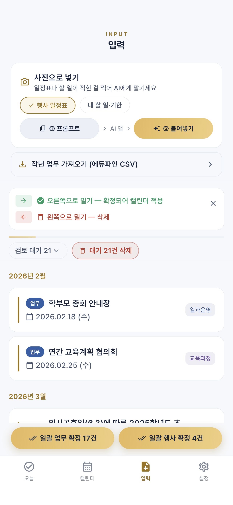
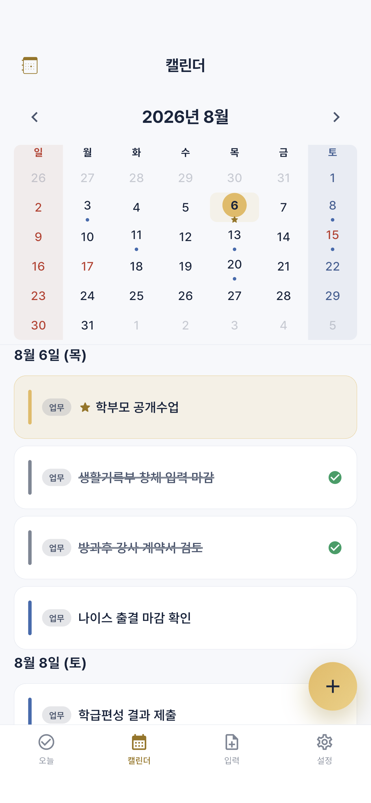
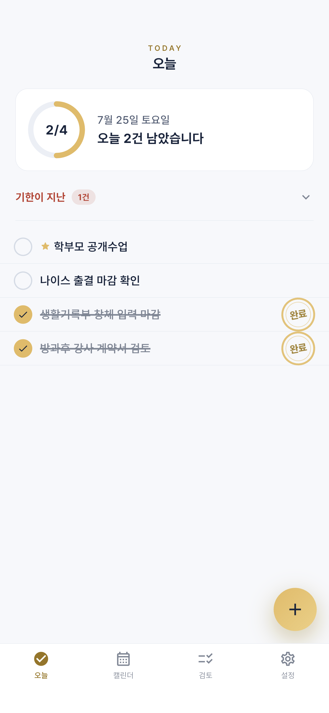
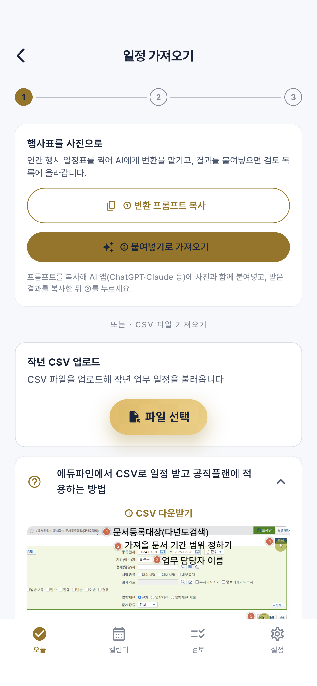
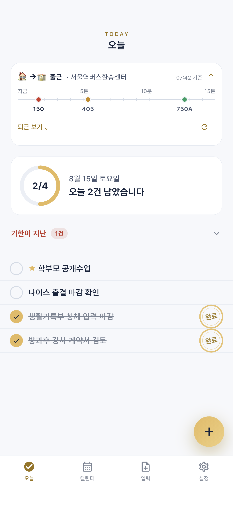

일정표를 찍어 AI에게 맡기고, 결과를 붙여넣습니다.
앱은 AI를 직접 부르지 않습니다 — 사진은 여러분이 쓰는
AI 앱에만 올라갑니다.
타이핑 0줄로 2학기 일정 세팅
입력 · 사진 AI입력 탭에서 행사 일정표를 고르고 프롬프트를 복사합니다.
쓰시는 AI 앱에 프롬프트와 일정표 사진을 함께 올립니다.
AI 결과를 복사해 돌아와 누르면 검토 목록에 올라옵니다.
오른쪽으로 밀거나 아래 일괄 확정으로 한 번에 캘린더로.

잠금화면 위젯이 읽는 건 기기 캘린더입니다.
오른쪽으로 밀면 그쪽으로 넘어갑니다 —
두 번 밀어도 두 개가 되지 않습니다.
두 번 밀어도 덮어쓰기
캘린더 · 내보내기그날 일정이 아래 목록에 뜹니다.
기기 캘린더로 저장됩니다. 왼쪽으로 밀면 완료.
계정이 여럿이면 어디로 갔는지가 중요합니다.
전부 밀면 위젯이 시끄럽습니다 — 잊으면 안 되는 것만.

동그라미를 누르면 도장이 찍히고 위쪽 링이 차오릅니다.
완료해도 자리에서 밀려나지 않습니다 — 밀려나면
방금 찍은 도장이 화면 밖에서 재생됩니다.
오늘 2건 찍었다. 링이 차오른다
오늘 · 완료 도장그 자리에서 도장이 찍힙니다. 목록이 다시 정렬되지 않습니다.
지난 항목을 섞으면 100%에 도달할 수 없습니다.
그 이상 쌓이면 '오늘'이 화면 밖으로 밀려납니다.
완료 · 결재 · 판다 · 도마뱀. 설정에서 바꿉니다.

생산문서등록대장 CSV를 넣으면 작년에 처리한 업무가
올해 날짜로 들어옵니다. 확정한 것만 캘린더로.
이틀 걸리던 일이 출발점이었습니다.
작년 업무가 올해 일정으로
입력 · 작년 CSV문서등록대장(다년도검색)으로 들어갑니다.
예: 2025-03-01 ~ 2026-02-28, 기안자에 본인.
결과 표 상단 저장 메뉴에서 내려받습니다.
받은 파일을 공유 → 공직플랜. 목록에 없으면 '기타'.

정류장 두 개만 등록하면 시간대에 따라 알아서 바뀝니다.
제 서버를 거치지 않습니다 — 공공데이터를
폰에서 직접 부릅니다.
뛸까 말까를 3분이 정해준다
오늘 · 버스 도착기본은 꺼져 있습니다.
집 근처 · 학교 근처. 시간대에 따라 자동 전환.
길 양쪽은 이름·번호가 같습니다 — 행선지를 보세요.
접으면 조회를 멈춥니다. 막차 뒤에도 멈춥니다.
설치해 두고 14일만 지우지 않으시면 됩니다. 써보시면 좋고, 안 쓰셔도 괜찮습니다.
참여는 비밀댓글로 구글 계정을 남겨 주세요 — 폰 Play 스토어에 로그인된 그 계정이어야 합니다.
비밀댓글이라 다른 분에게 보이지 않습니다
아이폰은 App Store